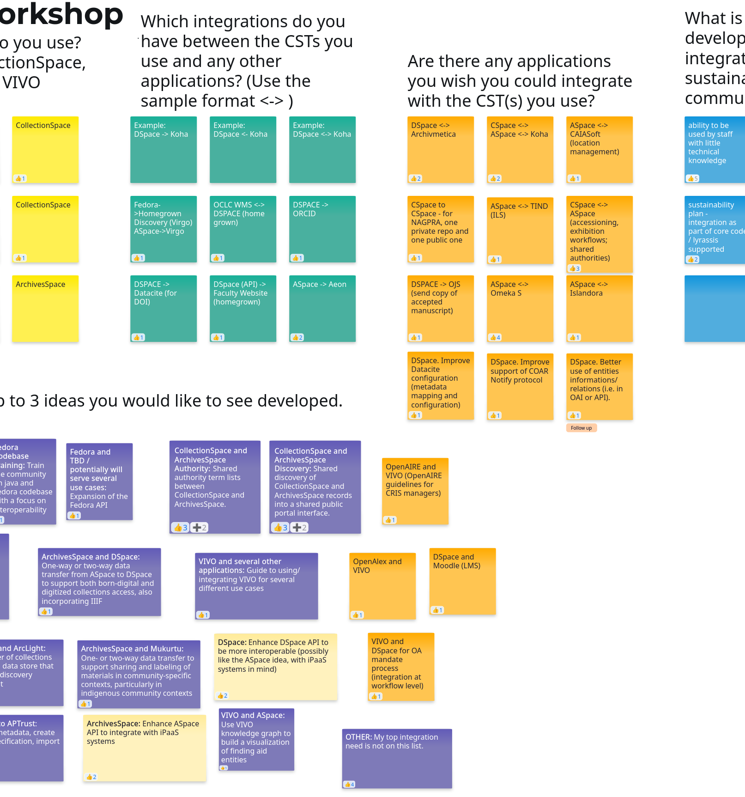

Lyrasis CST Interoperability Project
The Community Supported Technologies (CST) Interoperability Project will enhance interoperability of each of the CSTs in the Lyrasis Organizational Home: ArchivesSpace, CollectionSpace, DSpace, Fedora and VIVO.
Public Announcements
Project Updates
Fall Feedback Sessions
The feedback process has taken shape:
- Generate ideas
- Generate conversation about ideas
- Generate solutions
Generating Ideas
We are nearing the end of the idea generation process. The CST communities have a long history of documentation and conversations about integrations and feature requests. We first generated ideas from past documentation.
Workshops
Then we held a series of workshops with each CST community, and a two-day blitz of workshops that members of any Lyrasis CST community could participate in to solicit ideas.
 Above: Whiteboard sample from an integration workshop
Survey
We developed and released a survey. Anyone involved in a Lyrasis CST is invited to fill out the survey. We hope the survey will generate further ideas, more information about existing integrations, and feedback on other interoperability-related program needs. The survey is open until Jan. 15, so fill out the one for your respective community now!:
Please help us spread the word about your community’s survey: Share it with other users of your community technology, or post it on your favorite social media platform.
Generating Conversation about Ideas
We are now discussing high level ideas to identify discrete solutions we can design. If you are a Lyrasis CST community member, you are invited to participate in conversations about proposed solutions. You have two pathways to participate.
Generating Designs
Once solutions are identified, we will work together to draft descriptions and user behavior scenarios using a Behavior-Driven Design (BDD) process. Again, there are two ways to participate in defining user behavior:
The ideas that make it through these steps of the feedback process will be considered for developing functional requirements. The CST Interoperability consultant will propose one solution to each community's governance team. We will select up to five solutions total (at least one for each CST) with a target decision date of January 30.
Check the GitHub Project to see ideas moving through the refinement process. Stay tuned to see what amazing ideas make it to the top!
Project Kickoff at the Organizational Home Cross-Chairs Meeting
We were fortunate to time our project kick-off with the Fall quarterly Organizational Cross-Chairs Meeting where all the Chairs and Vice Chairs of Lyrasis CSTs get together. On Oct. 15, 2025, we shared the primary goals, deadlines, and engagement points for the Interoperability project.
The meeting slides include a summary of this information.
‼️ Important Dates for CST Communities
| Date | Purpose | Request |
|---|---|---|
| Oct-Dec 2025 | Feedback | Share integration ideas. |
| Jan. 2026 | Feedback | Provide feedback on suggested integrations. |
| Feb. 2026 | Approval | Approve recommended workflows. |
| May 2026 | Feedback | Provide feedback on draft functional requirements. |
| June 2026 | Approval | Approve functional requirements. |
🎯 Project Milestones
| Date | Milestone |
|---|---|
| Dec. 30, 2025 | Integrations identified and feedback requested on suggested integrations. |
| Feb. 23, 2026 | Integrations selected and approved. |
| April 30, 2026 | Draft Specifications complete. |
| June 30, 2026 | Final Specifications and full implementation package complete. |